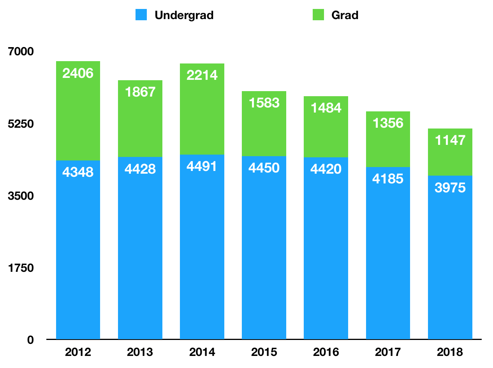

Searcy, AR (HU16 News) – There may be less of us in line for a chicken biscuit this year. According to statistics released by the University, Harding’s undergraduate enrollment has declined to 3,975. That’s a decrease of 210 people or five percent.
Jana Rucker, Harding University’s Vice President for University Communications and Enrollment, says many different factors have lead to a change in marketplace. “There are schools that are up, but the vast majority of schools are down.”
The Arkansas Democrat Gazette reported that, according to state officials, total college enrollment across Arkansas is down 1.3%, as ASU, University of Central Arkansas, and Southern Arkansas University also saw a decrease in enrollment. Enrollment in the state has dropped 5.4% over the last five years.
“There are many factors, like more competing products, … online degree programs, and free junior college,” Rucker said. “And many students going right into the workforce because the economy is stronger and a degree seems less – necessary, if you will. … There’s high school graduation rates. There are less high school graduates. So you’re seeing some of those industry trends, but that doesn’t mean we can’t grow.”
She says Harding is taking action to grow. Over the spring and summer, Harding conducted a branding research study to find ways to better communicate their message. “Just polishing ourselves,” she said, “so that our outside matches our inside.”
While enrollment numbers were down, Harding moved up in several national rankings. Harding is up three places to 20th on the U.S. News and World Report regional rankings. The Wall Street Journal also improved Harding’s rating to 3rd in how students engage with their faculty and education.
Rucker says one of the things setting Harding apart from many schools is the Christian environment. “We have a lot of like minded students. We’re from different backgrounds and we have different ways that we look at things. But the way we behave and the way we treat each other with respect is a very big part of that.”
She says students have a role to play in spreading word about Harding. One of the places students have been a part of the recruiting effort is traveling with Harding President Dr. Bruce McLarty to receptions around the country.
Isaac Davis travelled on the Harding plane to a reception in Dallas. “It’s neat to be able to … answer these … random questions about Harding. Just something as simple as, you know, ‘how are the beds?'”
“And we each just spoke about the different aspects of Harding that we really enjoyed,” said Coleman VanBrunt, who spoke at a recent reception in Tulsa. “And we had freshmen all the way to seniors, and so they were involved in the business department, and music, and just the science department. And so we were able to express just how much we appreciate the professors and how much we appreciate the Harding community and what it’s done for us.”
“We spend a lot of the time just sitting around and just, like, talking to potential students,” said Emma Howell. She was invited to speak at a reception in Bentonville. “It’s really rare, at a lot of universities, that you get to sit down and, like, have dinner with the president of the university, which I think was something that added a nice, like, personal face for Harding in real life.”
“Because of the relationships I have with people in Harding’s leadership, and because of how highly I view Harding and where I see it moving,” Davis shared, “I am very sure that Harding will survive and do well in the future.”
Rucker says having a more clear message and improving understanding of what sets Harding apart is important. “We can grow, and we will go. And so, that, I don’t want people to be concerned that we are discouraged or not able to sort of overcome some of the trends. It’s very possible.”
Rucker says that the university wants to continue to engage students, faculty members, and families who have experienced Harding as they best recruiting force they could have.
Note: on the air and in the video, I incorrectly identified a decrease of 209 people. This story has the corrected number of 210 people.